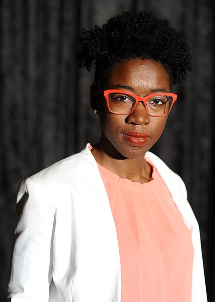

Joy Adowaa Buolamwini é uma cientista da computação ganense-americana-canadense e ativista digital baseada no MIT Media Lab . Buolamwini se apresenta como uma poetisa do código, filha da arte e da ciência. Ela fundou a Algorithmic Justice League , uma organização que trabalha para desafiar o preconceito no software de tomada de decisão , usando arte, advocacia e pesquisa para destacar as implicações sociais e os danos da inteligência artificial (IA).

Pesquisadora encontra tendências sexistas e racistas em sistemas de inteligência artificial e comercial.
Alguns marcos do seu trabalho
- 2012: Buolamwini se formou como Stamps President's Scholar da Georgia Tech em 2012.
- 2017: Ela recebeu um mestrado do MIT em 2017 pela pesquisa supervisionada por Ethan Zuckerman.
- 2022: Ela recebeu um doutorado do MIT Media Lab em 2022 com a tese Enfrentando o olhar codificado com auditorias evocativas e auditorias algorítmicas.